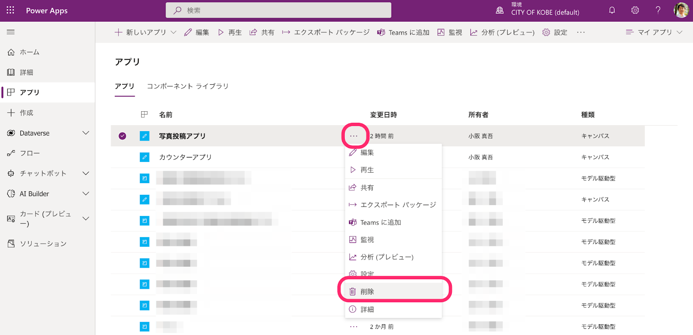
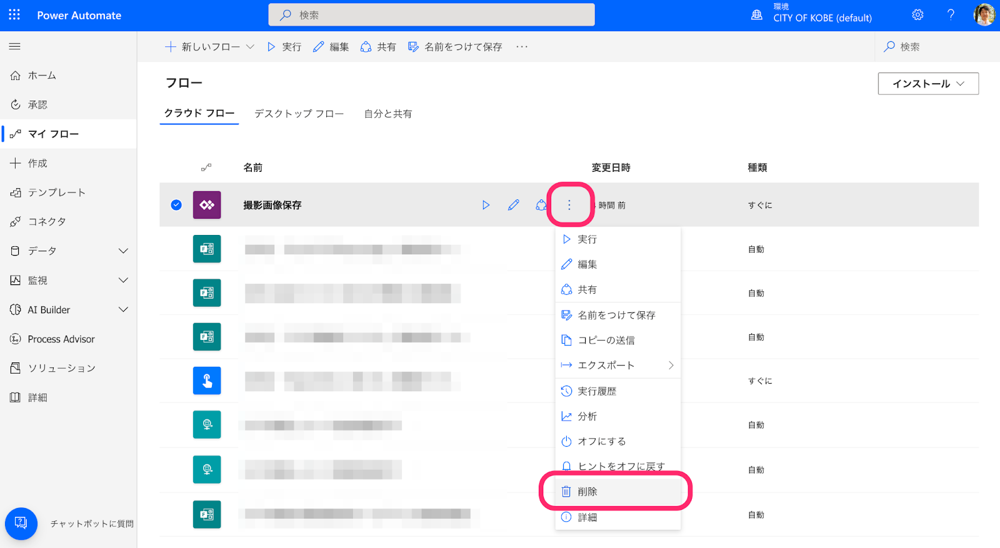
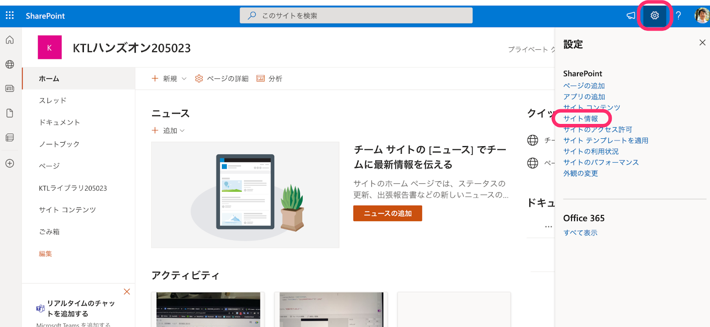
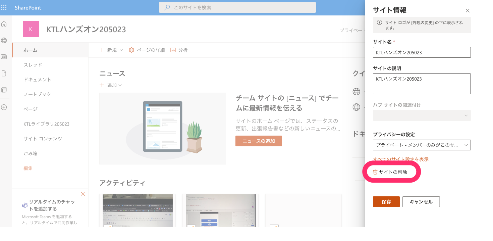

この手順はKTL Learn 「はじめてのPower Apps」にて使用するハンズオン手順です。
この手順は公開しますので復習や展開し自由に使って頂いて構いません。
- Power Appsを開く
- 削除したいアプリの行の右側の3点リーダ(「...」のアイコン)を選択し、「削除」を選択
 - 削除してよいか尋ねられるので「クラウドから削除」を選択
- 削除完了。残りのアプリも同様に削除しておく
- Power Automateを開く
- 削除したいアプリの行の右側の3点リーダ(「...」のアイコン)を選択し、「削除」を選択
 - 削除してよいか尋ねられるので「削除」を選択
- 削除完了
- SharePointを開く
- 左側のメニューから「マイサイト」を選択し、今回作成したサイトを探し開く
- 画面右上の設定ボタン(歯車アイコン)を選択
- 「サイトの情報」を選択
 - 「サイトの削除」を選択
 - 削除してよいか尋ねられるので、1箇所チェックを入れた上で「削除」を選択
- 削除完了